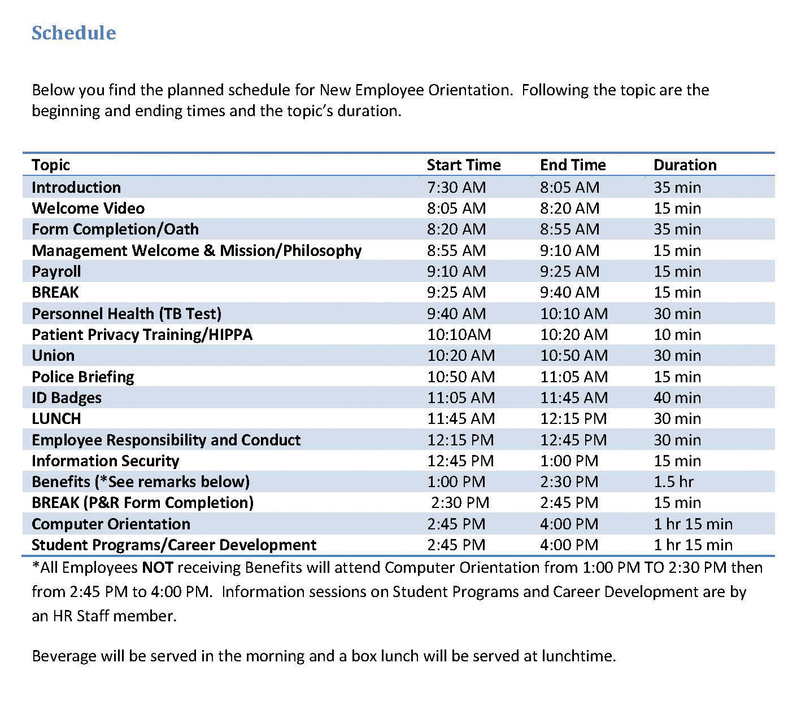

Any effective company has training in place to make sure employees can perform his or her job. During the recruitment and selection process, the right person should be hired to begin with. But even the right person may need training in how your company does things. Lack of training can result in lost productivity, lost customers, and poor relationships between employees and managers. It can also result in dissatisfaction, which means retention problems and high turnover. All these end up being direct costs to the organization. In fact, a study performed by the American Society for Training and Development (ASTD) found that 41 percent of employees at companies with poor training planned to leave within the year, but in companies with excellent training, only 12 percent planned to leave.Leigh Branham, The 7 Hidden Reasons Why Employees Leave (New York: American Management Association, 2005), 112–5. To reduce some costs associated with not training or undertraining, development of training programs can help with some of the risk. This is what this chapter will address.
For effective employee training, there are four steps that generally occur. First, the new employee goes through an orientation, and then he or she will receive in-house training on job-specific areas. Next, the employee should be assigned a mentor, and then, as comfort with the job duties grows, he or she may engage in external training. Employee training and developmentThe framework used to help employees develop their personal and organizational skills, knowledge, and abilities. is the process of helping employees develop their personal and organization skills, knowledge, and abilities.
The first step in training is an employee orientation. Employee orientationThe process used for welcoming a new employee into the organization. is the process used for welcoming a new employee into the organization. The importance of employee orientation is two-fold. First, the goal is for employees to gain an understanding of the company policies and learn how their specific job fits into the big picture. Employee orientation usually involves filling out employee paperwork such as I-9 and 401(k) program forms.
The goals of an orientation are as follows:
Some companies use employee orientation as a way to introduce employees not only to the company policies and procedures but also to the staff. For an example of an orientation schedule for the day, see Figure 8.1.
Figure 8.1
Some companies have very specific orientations, with a variety of people providing information to the new hires. This can create a welcoming environment, besides giving the employee the information they need. This is an example of one such orientation.
Source: Sample schedule courtesy of Louis Stokes Cleveland VA Medical Center, http://www.cleveland.va.gov/docs/NEOSchedule.pdf (accessed September 2, 2011).
Have you ever participated in an orientation? What was it like? What components did it have?
In-house training programsLearning opportunities developed by the organization in which they are used. are learning opportunities developed by the organization in which they are used. This is usually the second step in the training process and often is ongoing. In-house training programs can be training related to a specific job, such as how to use a particular kind of software. In a manufacturing setting, in-house training might include an employee learning how to use a particular kind of machinery.
Many companies provide in-house training on various HR topics as well, meaning it doesn’t always have to relate to a specific job. Some examples of in-house training include the following:
As you can tell by the list of topics, HR might sometimes create and deliver this training, but often a supervisor or manager delivers the training.
After the employee has completed orientation and in-house training, companies see the value in offering mentoring opportunities as the next step in training. Sometimes a mentor may be assigned during in-house training. A mentorA trusted and experienced advisor who has direct investment in the development of an employee. is a trusted, experienced advisor who has direct investment in the development of an employee. A mentor may be a supervisor, but often a mentor is a colleague who has the experience and personality to help guide someone through processes. While mentoring may occur informally, a mentorship program can help ensure the new employee not only feels welcomed but is paired up with someone who already knows the ropes and can help guide the new employee through any on-the-job challenges.
To work effectively, a mentoring program should become part of the company culture; in other words, new mentors should receive in-house training to be a mentor. Mentors are selected based on experience, willingness, and personality. IBM’s Integrated Supply Chain Division, for example, has successfully implemented a mentorship program. The company’s division boasts 19,000 employees and half of IBM’s revenues, making management of a mentorship program challenging. However, potential mentors are trained and put into a database where new employees can search attributes and strengths of mentors and choose the person who closely meets their needs. Then the mentor and mentee work together in development of the new employee. “We view this as a best practice,” says Patricia Lewis-Burton, vice president of human resources, Integrated Supply Chain Division. “We view it as something that is not left to human resources alone. In fact, the program is imbedded in the way our group does business.”Blyde Witt, “Serious Leadership: IBM Builds a Successful Mentoring Program,” Material Handling Management, December 1, 2005, accessed July 25, 2010, http://mhmonline.com/workforce-solutions/mhm_imp_4483/.
Some companies use short-term mentorship programs because they find employees training other employees to be valuable for all involved. Starbucks, for example, utilizes this approach. When it opens a new store in a new market, a team of experienced store managers and baristas are sent from existing stores to the new stores to lead the store-opening efforts, including training of new employees.Arthur Thompson, “Starbucks Corporation,” July 24, 2011, accessed July 29, 2011, http://www.mhhe.com/business/management/thompson/11e/case/starbucks-2.html.
External trainingAny type of training that is not performed in-house, such as seminars or conferences. includes any type of training that is not performed in-house. This is usually the last step in training, and it can be ongoing. It can include sending an employee to a seminar to help further develop leadership skills or helping pay tuition for an employee who wants to take a marketing class. To be a Ford automotive technician, for example, you must attend the Ford ASSET Program, which is a partnership between Ford Motor Company, Ford dealers, and select technical schools.“Automotive Technology/Ford ASSET Course,” Sheridan Technical Center, accessed July 29, 2011, http://www.sheridantechnical.com/Default.aspx?tabid=692.
To Train or Not to Train
Towanda Michaels is the human resource manager at a medium-size pet supply wholesaler. Casey Cleps is a salesperson at the organization and an invaluable member of the team. Last year, his sales brought in about 20 percent of the company revenue alone. Everybody likes Casey: he is friendly, competent, and professional.
Training is an important part of the company, and an e-mail was sent last month that said if employees do not complete the required safety training by July 1, they would be let go.
It is July 15, and it has just come to Towanda’s attention that Casey has not completed the online safety training that is required for his job. When she approaches him about it, he says, “I am the best salesperson here; I can’t waste time doing training. I already know all the safety rules anyway.”
Would you let Casey go, as stated in the e-mail? How would you handle this?
How Would You Handle This?
https://api.wistia.com/v1/medias/1348781/embedThe author discusses the How Would You Handle This situation in this chapter at: https://api.wistia.com/v1/medias/1348781/embed.